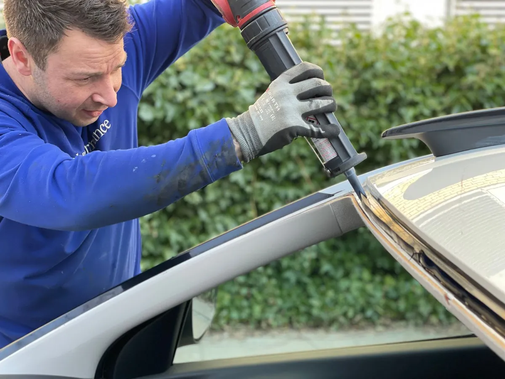

Broken door glass and rear windows, replaced before rain and dust get inside.
Side and rear window replacement in Melbourne, FL covers the tempered glass used in door windows and rear windshields, along with the regulator mechanism that raises and lowers it. Unlike a windshield, this glass cannot be repaired once it is chipped or cracked, since tempered glass is built to shatter completely rather than hold a small break.

The technician removes the interior door panel or rear trim to access the glass track, clears out any remaining shattered glass, and fits a new tempered pane sized to your exact make and model. If the regulator, the motor and cable system that moves the window, is also worn out or broken, that gets replaced or repaired at the same time so the new glass actually goes up and down properly.
Once the new glass is seated and tested through a full range of motion, the door panel or trim goes back on and the window gets a final check for a tight seal against wind and water.
A shattered window from a break-in is the most obvious case, but plenty of side and rear windows fail on their own. A window that no longer seals flush, one that rattles loudly in its track, or one that has stopped responding to the switch entirely all point to glass or regulator problems that only get worse with time.
Rear windows on hatchbacks and SUVs sometimes crack from the defrost wire grid overheating or from a hard slam of the hatch, which is different damage than what typically breaks a side window but leads to the same fix.
Windshields are made from laminated glass, two layers bonded around a plastic interlayer, which is why they crack instead of shattering. Side and rear windows use tempered glass instead, a single layer that has been heat-treated to be stronger under normal use but designed to break into small, dull chunks the instant it takes a serious hit, so a broken piece of tempered glass never leaves large sharp shards inside the car.
That difference in the glass itself is exactly why a windshield can often be repaired and a side or rear window cannot. Once tempered glass breaks, there is no partial fix, only a full replacement of the pane.
The window regulator is the part most often overlooked until it causes a second visit. A window that drops back down after being rolled up, or one that grinds during movement, usually means the regulator needs attention alongside the glass itself, not just a new pane dropped into a worn-out track.
Vehicle age and prior water damage inside the door also play a role. A door that has taken on rainwater for months through a failed seal can have rusted internal hardware that needs addressing before new glass goes in, or the same failure will happen again within a year.
Not sure if your issue is the glass or something else? Read about our mobile service and we’ll take a look wherever your car is parked.
Side and rear windows are made of tempered glass, which is designed to shatter into small, relatively dull pieces rather than large sharp shards when it breaks. That is a safety feature, not a defect, and it means the whole pane needs replacing rather than repairing.
No. Because tempered glass shatters completely once broken, there is no repairing a chip or crack the way you can with a windshield. Side and rear windows are always a full replacement once damaged.
Usually not the glass itself. A slow or stuck window points to the regulator, the mechanism that raises and lowers the glass, wearing out or losing lubrication. We check both the glass and the regulator together, since one often affects the other.
As soon as possible. An open window invites rain into the door panel and carpet, which in Melbourne’s humidity can lead to mold within days, and it also leaves the vehicle an easy target for theft.